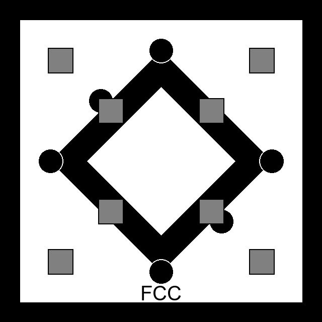

AR-Marker
Verwende diese Marker für die AR-Visualisierung
Anleitung
- Option 1 - Ausdrucken: Drucke diese Seite aus (Strg+P) für physische Marker
- Option 2 - Bildschirm: Zeige einen Marker auf diesem Gerät und scanne mit einem zweiten Gerät
- Öffne die WebAR-Seite auf dem Gerät mit der Kamera
- Klicke auf "AR starten" und erlaube Kamera-Zugriff
- Richte die Kamera auf einen der Marker
- Das 3D-Modell erscheint über dem Marker
KRZ-Marker
Kubisch Raumzentriert

Struktur: 9 Atome
Beschreibung: 8 Eckatome + 1 Zentralatom
KFZ-Marker
Kubisch Flächenzentriert

Struktur: 14 Atome
Beschreibung: 8 Eckatome + 6 Flächenatome
HDP-Marker
Hexagonal Dichteste Packung

Struktur: 17 Atome
Beschreibung: 12 Hexagon + 2 Zentren + 3 Mitte